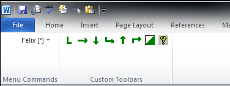

7.2. Review Mode¶
Use Review Mode to review your translation using Felix. Review Mode essentially functions like Translation Mode (see Translation Mode), except that instead of looking up source text to translate, you are looking up translations for review.
To enter review mode, click the half-green, half-white toolbar button on the Felix toolbar.

In Review mode, the colors of the toolbar buttons are reversed.

Note
In Word 2007 and later, the menu and toolbar appear in the Add-Ins tab. In Word 2003, an asterisk in square brackets ([*]) appears to the right of the menu item. This helps you tell that you are in Review Mode.
Each of the Review Mode functions is described below.
7.2.1. Look up a Translation¶
To have the suite automatically select the next translation to look up, place the cursor in front of the sentence, and select Felix ‣ Find Next Translation (or press Alt + →). The Felix interface will skip any whitespace before the next sentence, and select all the text up to the next tab, line break, or end-of-sentence marker (e.g. period). The Felix interface will then send the sentence to Felix for lookup.
Most text formatting information (e.g. bold, italic, font, text color) is preserved in the query. Some formatting information, however, such as highlight color and centered text, is not preserved.
To select the sentence to look up yourself, select a segment of text, then select Felix ‣ Find Current Translation (or press Alt + L).
If you would like to extend the lookup segment beyond the current selection, then with the current lookup scope selected, select Felix ‣ Extend Lookup Sentence (or press Ctrl + →).
Note that unlike Translation Mode, the Query is the translation segment, not the source-language segment. Additionally, the match score is for its similarity with the Trans field of the memory entry, rather than the Source field. See below for a screen shot.
7.2.2. Navigate through the Matches¶
Sometimes when you look up a translation in your memory, Felix will have more than one suggestion. The number of suggestions, and the number of the current suggestion, will be shown at the bottom right of the suggestion:

Fuzzy match view in Felix
In this example, the first of two suggestions (1/2) is being shown.
To view the next suggestion, click on Next in the Memory window, or from Word, select Felix ‣ Next Translation (or press Alt + N).
Tip
The score for the next translation (in this example 68%) is shown next to the Next link.
To view the previous suggestion, click on Prev in the Memory window, or from Word, select Felix ‣ Previous Translation (or press Alt + P).
Tip
The score for the previous translation (in this example 68%) is shown next to the Prev link.
Matches will cycle: If you press Next while on the last suggestion, the first suggestion will be shown; likewise, pressing Prev while on the first suggestion will show the last suggestion.
7.2.3. Correct a Translation¶
While a translation query is shown in the Memory window (see 5.3.2 Look up a Translation, above), place the cursor at the end of your translation, and select Felix ‣ Correct Translation (or press Alt + ↑). The segment from the start of the original sentence to the current cursor position is registered as the translation.
To manually select the segment to register as the translation, select a segment of text, then select Felix ‣ Correct Translation (or press Alt + ↑). The current selection is registered as the translation.
Tip
Select Felix ‣ Correct And Next (or press Alt + S) to register the current translation, then automatically select and look up the next sentence. This is equivalent to pressing Alt + ↑, then Alt + →.
7.2.4. Add a Glossary Entry¶
While you are reviewing, you may want to add terms to your glossary. You can do this easily from inside Word. Simply select the translation of your glossary term, and from the Felix menu, select “Add to Glossary”. Alternatively, you can press Alt + M, G.
The Add to Glossary dialog box appears. Type in a source for the translation, and click Add. The entry is added to the Felix glossary.
You can find more detailed instructions, including screen shots, here.
7.2.5. Delete a Translation¶
While a suggestion is being shown in the Memory window (see 5.3.2 Look up a Translation, above), select Felix ‣ Delete Translation (or press Alt + D), or in the Felix window, press the Delete link.
A message box will appear, asking if you really want to delete this translation. To delete the translation, click Yes. The currently displayed entry is deleted. If you change your mind, click No . The entry will not be deleted.
7.2.6. Restore from Memory¶
After you have edited a translation, you may wish to restore the translation stored in the memory, or you may wish to replace the current translation with another from memory.
While a suggestion is being shown in the Memory window (see 5.3.2 Look up a Translation, above), select Felix ‣ Restore Translation (or press Alt + ↓). The current selection is replaced by the suggestion.
Tip
Select Felix ‣ Restore And Lookup Next Trans (or press Alt + G) to restore the current translation, and automatically select and look up the next translation. This is equivalent to pressing Alt + ↓, Alt + ↑, then Alt + →.
7.2.7. Get a Glossary Entry¶
Every time you look up a translation in the memory, the source field of the current match is also searched for matches in all open glossaries. Any matches are displayed in the corresponding Glossary window. This helps you ensure that you are using the technical terms contained in your glossaries, especially if you have mandatory terminology guidelines from your client.

Glossary Search Results View
As you are typing, you can retrieve any matches shown in the Main Glossary window via hot keys. Select Felix ‣ Get Glossary Entry ‣ Entry {N} (or press ALT + {N}), where {N} is a number between 0 and 9, to retrieve that glossary entry. If the number of the entry you wish to retrieve is higher than 9, then press Alt + M, H (Note that this will not function if the IME is turned on). An input box appears; enter the entry number and press Return to retrieve the corresponding entry.
7.2.8. Search for Concordance¶
Oftentimes as you review your translation, you will wonder how you have used a particular term in previous translations. This is what the Concordance feature is for. Select the term you wish to investigate, then select Felix ‣ Find Concordance (or press Alt + M, C). Any entries in the memory containing that term in the Trans field appear in the Memory window: Concordance Results View
7.2.9. Save the Memory¶
A prudent backup strategy will save you future headaches in any computing situation, and Felix is no exception. In order to facilitate saving the memory and glossaries, you can perform this from Word via a keyboard shortcut: Just press Alt + M, S to save your current memory and glossaries (Note that this will not function if the IME is turned on). You can also do this from the menu, by selecting Felix ‣ Save Memory.